Entregando VM's no VMware vCenter/vSphere com o Jenkins
Olá pessoal, depois de muito tempo estou de volta!
No meu primeiro artigo, expliquei e demonstrei como criar máquinas no vCenter/vSphere usando terraform, e que tal entregar essas máquinas virtuais dentro de um pipeline como se fosse um aplicativo?
Não é de hoje que tudo está se convergindo para Cloud Computing e de fato esse parece ser o futuro. Mas ainda temos o meio do caminho, muitas empresas utilizam parte da sua infraestrutura em datacenters, migrando e ou utilizando esse dois mundo em uma abordagem de Cloud Hibrida que acaba fazendo parte do negócio.
Bom deixando a história de lado bora colocar a mão na massa!
Nesse artigo vou utilizar o Jenkins para criar o pipeline de entrega dessas máquinas virtuais. Porque o Jenkins? Ele ainda é um dos serviços de CI/CD mais conhecidos, acredito que todo mundo que usa uma solução mais moderna, tenha pelo menos passado por ele, acho que ainda é valido conhece-lo. Existem grandes empresas que o utilizam e muito bem, com abordagens bem bacanas. o iFood é uma dessas empresas. No TDC do ano passado o pessoal demonstrou um uso de caso que inclusive inspirou esse artigo.
Jenkins
Para esse artigo vamos usar uma versão em container do Jenkins.
docker pull jenkins/jenkins
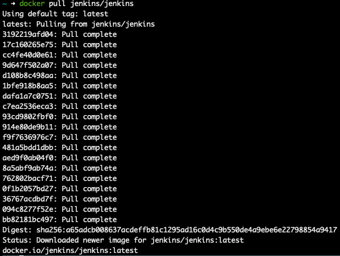">
Junto do Jenkins precisamos de instalar terraform
docker run -it -d --name jenkins -p 8080:8080 -p 50000:50000 jenkins/jenkins
docker exec -it jenkins mkdir /var/jenkins_home/extras
docker cp terraform jenkins:/var/jenkins_home/extras/
docker exec -it jenkins /var/jenkins_home/extras/terraform --version
Terraform v0.12.24
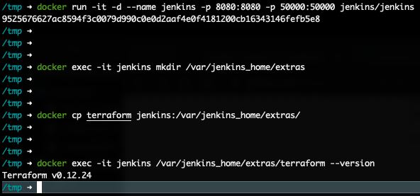">
Vamos pegar a senha inicial para inicializar o jenkins
docker exec -it jenkins cat /var/jenkins_home/secrets/initialAdminPassword
Abaixo segue o setup inicial do Jenkins até sua tela inicial.
Unlock Jenkins
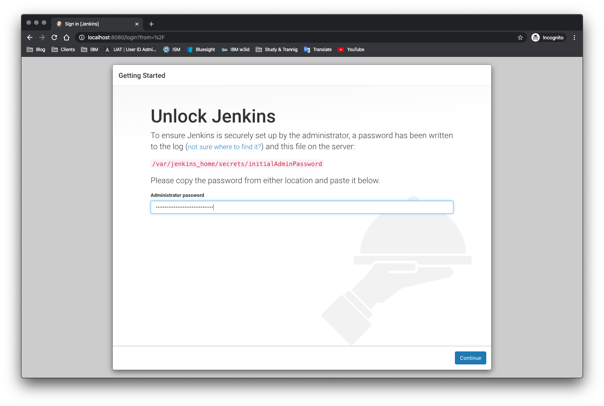">
Customize Jenkins
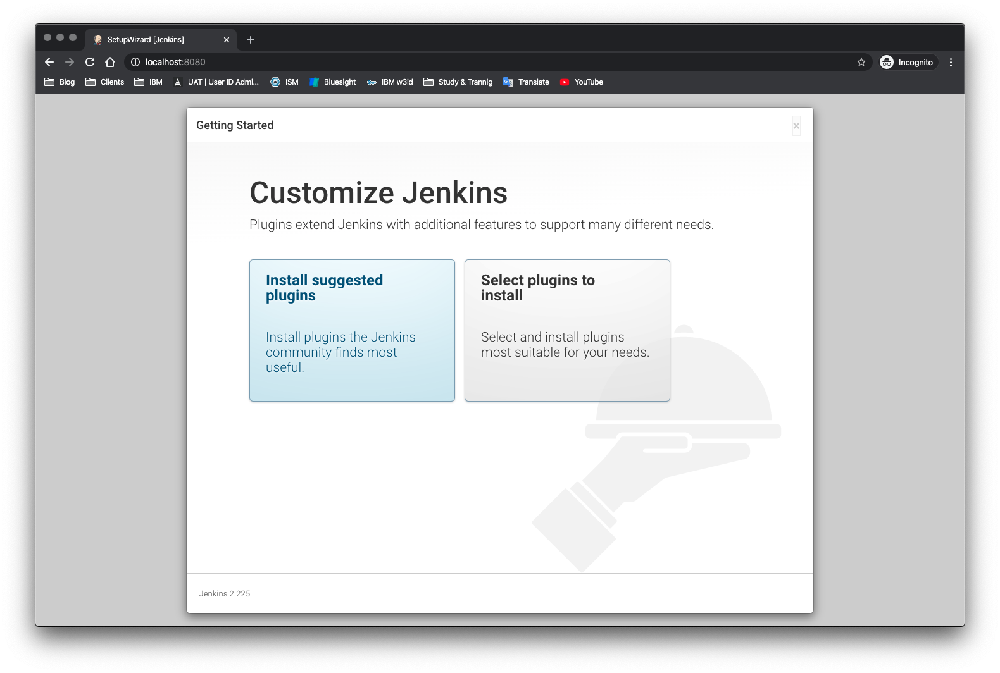">
Getting Started
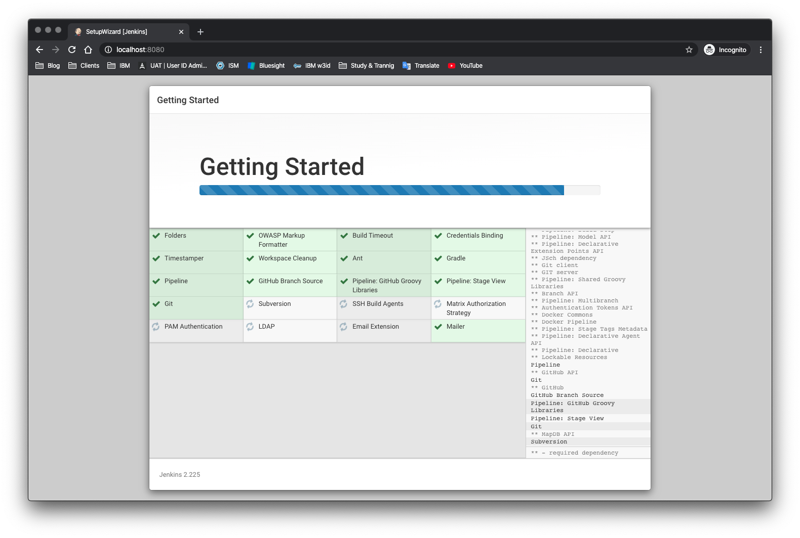">
Create First Admin User
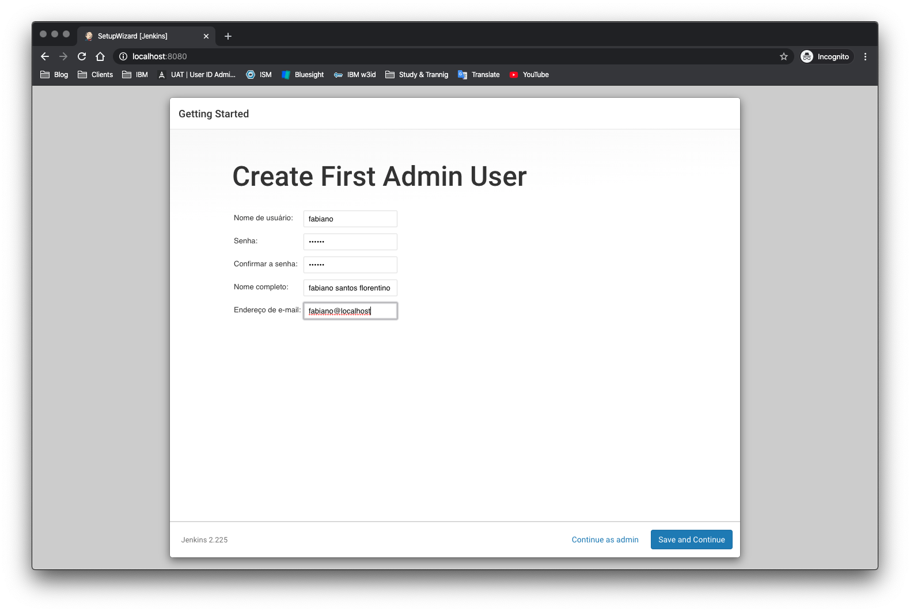">
Instance Configuration
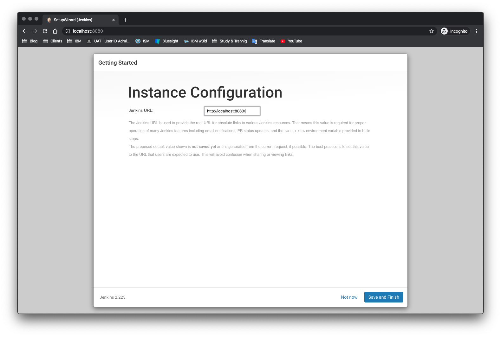">
Jenkins is Ready!
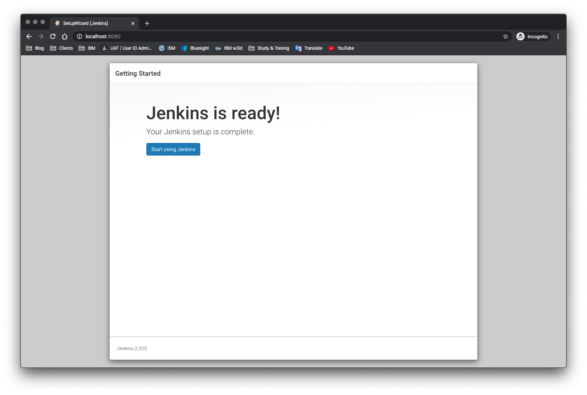">
Jenkins Dashboard
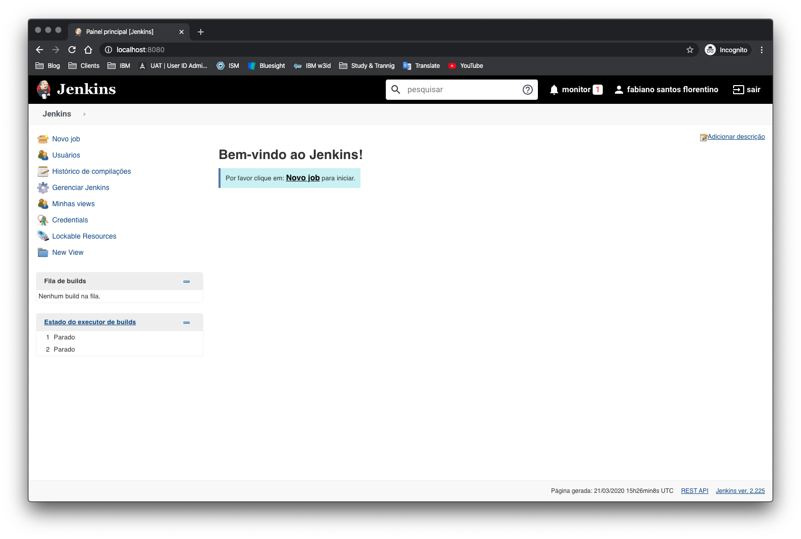">
JOB
Aqui a mágica acontece, vamos criar o pipeline para fazer o deploy da nossa VM.
Novo job
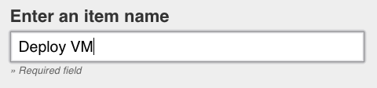">
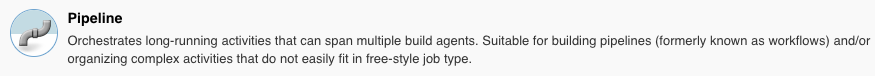">
Não vou entrar no detalhe de cada parametro do pipeline, vou direto a criação do pipeline. Com calma, leia cada parametro entenda se faz sentido para o seu uso.
Selecione a opção Este build é parametrizado.
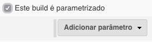">
Parametros
Para esse exemplo temos parametros iniciais para criar uma máquina virtual.
- Nome da máquina
- Quantidade de máquinas
- Número de processadores
- Número de memória
- Tamanho do disco para instalação do SO. OBS: Para esse exemplo, estou usando o tamanho de 50 (50GB) por conta da customização do disco feita no kickstart da imagem.
">
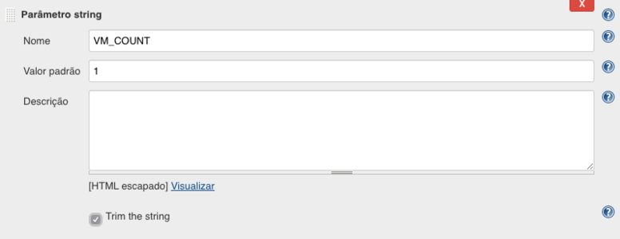">
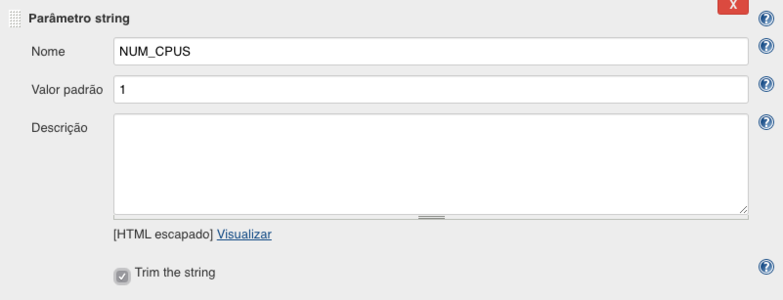">
">
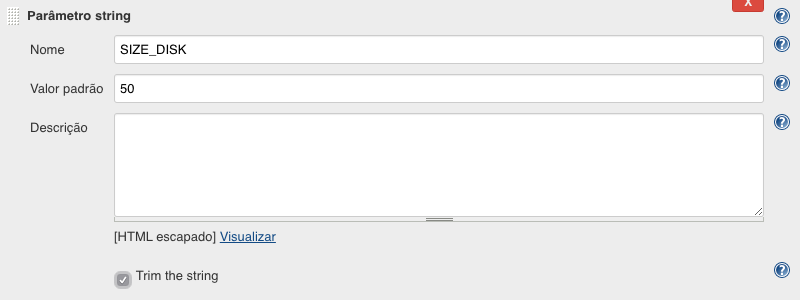">
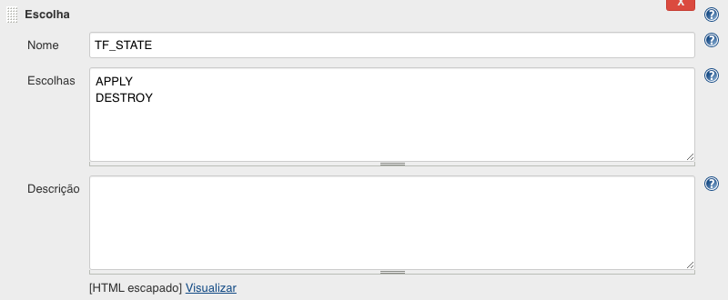">
Pipeline
Ainda no job, vamos configurar o projeto que ira fazer o deploy da(s) máquinas virtuais.
- Definição: Pipeline script from SCM
- SCM: Git
- Repositories
- Branches to build
- Script Path
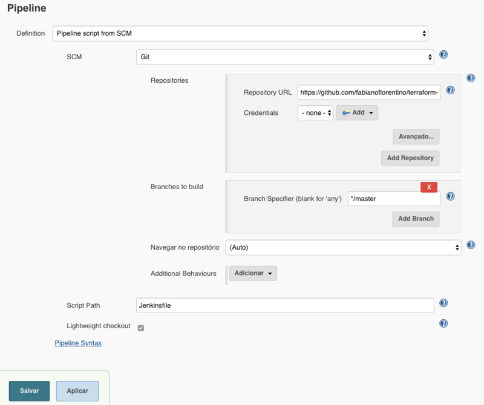">
Em destaque temos o parametro Script Path onde se encontra o arquivo Jenkinsfile, ele
quem ira fazer todo o processo de deploy.
Nesse exemplo existem duas variáveis PROVIDER_USR e PROVIDER_PSW, que são as informações que o terraform irá usar no módulo provider para acessar o vSphere/vCenter.
Bom, vou tomar que você tenha um breve entendimento de segurança e entenda que estamos fazendo um exemplo e que estamos em um ambiente controlado, POR FAVOR, NÃO USE ISSO EM PRODUÇÃO estude uma
forma mais segura ok?
No próprio jenkins existe uma forma de você gerenciar arquivos de credenciais e senhas. Vamos utilizar a opção de texto secreto Secret text
">
">
">
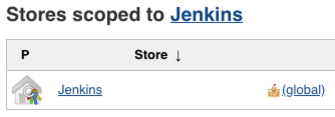">
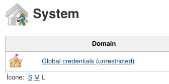">
">
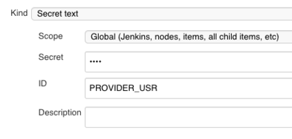">
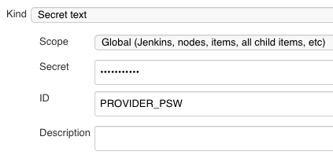">
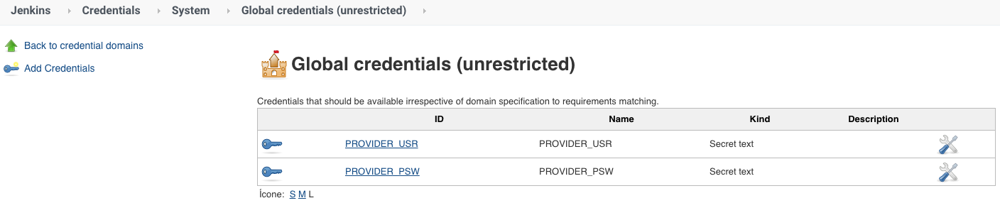">
Junto com a configuração de credencial do jenkins, no Jenkinsfile é preciso usar a seguinte função.
withCredentials([string(credentialsId: 'PROVIDER_USR', variable: 'PROVIDER_USR'), string(credentialsId: 'PROVIDER_PSW', variable: 'PROVIDER_PSW')])
Essa função cria uma mascara aos caracteres no log do JOB em execução.
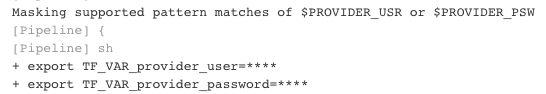">
Eis a mágica! :^D
pipeline {
agent {
any {}
}
stages {
stage ('Inicializando o Terraform') {
steps {
script {
withCredentials([string(credentialsId: 'PROVIDER_USR', variable: 'PROVIDER_USR'), string(credentialsId: 'PROVIDER_PSW', variable: 'PROVIDER_PSW')]) {
sh "export TF_VAR_provider_user=${env.PROVIDER_USR} \
&& export TF_VAR_provider_password=${env.PROVIDER_PSW} \
&& export TF_VAR_name_new_vm=${env.NAME_NEW_VM} \
&& export TF_VAR_vm_count=${env.VM_COUNT} \
&& export TF_VAR_num_cpus=${env.NUM_CPUS} \
&& export TF_VAR_num_mem=${env.NUM_MEM} \
&& export TF_VAR_size_disk=${env.SIZE_DISK} \
&& /var/jenkins_home/extras/terraform init \
&& /var/jenkins_home/extras/terraform plan -out deploy.tfplan"
}
}
}
}
stage ('Construindo Maquina Virtual') {
steps {
script {
if ("${env.TF_STATE}" == "APPLY") {
timeout(time: 3, unit: "MINUTES") {
input(id: 'chooseOptions', message: 'Criar a maquina virtual?', ok: 'Confirmar')
script {
sh '/var/jenkins_home/extras/terraform apply deploy.tfplan'
}
}
}
}
}
}
stage ('Destruindo Maquina Virtual') {
steps {
script {
if ("${env.TF_STATE}" == "DESTROY") {
timeout(time: 3, unit: "MINUTES") {
input(id: 'chooseOptions', message: 'Destruir a maquina virtual?', ok: 'Confirmar')
script {
withCredentials([string(credentialsId: 'PROVIDER_USR', variable: 'PROVIDER_USR'), string(credentialsId: 'PROVIDER_PSW', variable: 'PROVIDER_PSW')]) {
sh "export TF_VAR_provider_user=${env.PROVIDER_USR} \
&& export TF_VAR_provider_password=${env.PROVIDER_PSW} \
&& export TF_VAR_name_new_vm=${env.NAME_NEW_VM} \
&& export TF_VAR_vm_count=${env.VM_COUNT} \
&& export TF_VAR_num_cpus=${env.NUM_CPUS} \
&& export TF_VAR_num_mem=${env.NUM_MEM} \
&& export TF_VAR_size_disk=${env.SIZE_DISK} \
&& /var/jenkins_home/extras/terraform destroy -auto-approve"
}
}
}
}
}
}
}
}
post {
success {
slackSend (
color: '#088A29',
message: ":white_check_mark: SUCCESSFUL: Job '${env.JOB_NAME} [${env.BUILD_NUMBER}]' (${env.BUILD_URL})")
}
failure {
slackSend (
color: '#DF0101',
message: ":rotating_light: FAILED: Job '${env.JOB_NAME} [${env.BUILD_NUMBER}]' (${env.BUILD_URL})")
}
}
}
Construindo e ou Destruindo sua VM
Depois de realizar todas as configurações, vamos criar e ou destruir nossas máquinas virtuais.
No projeto, vamos contruir APPLY com parametros.
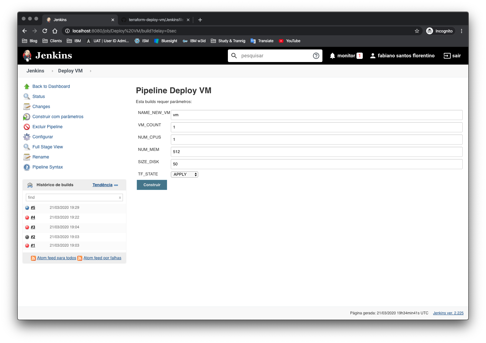">
Confirme a criação ou destruição do ambiente.
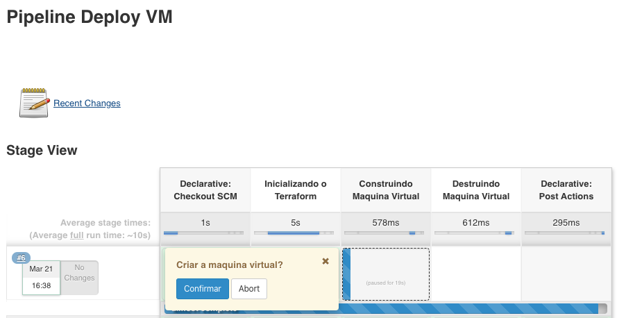">
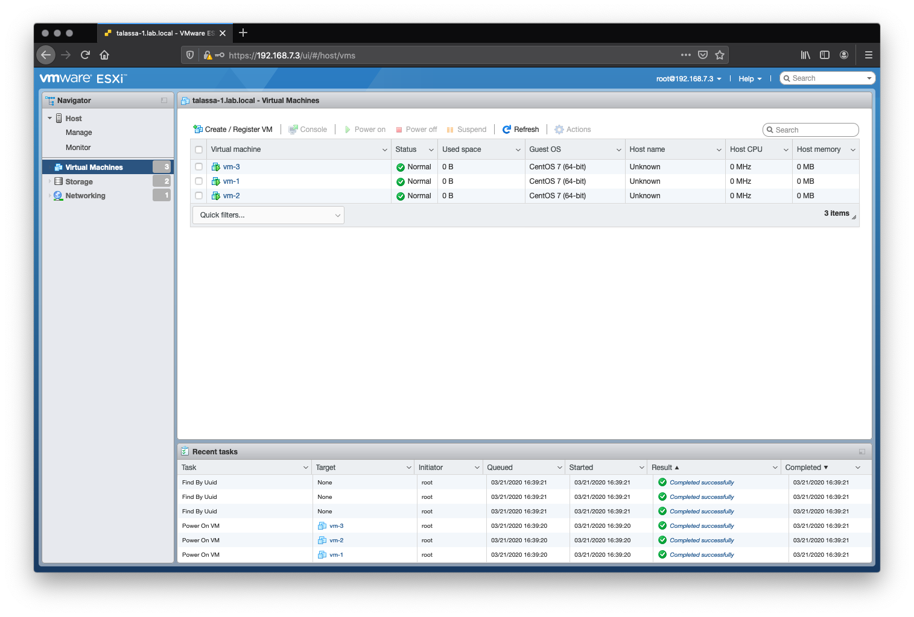">
Você também pode destruir(remover) as máquinas executando novamente o projeto selecionando o
DESTROY
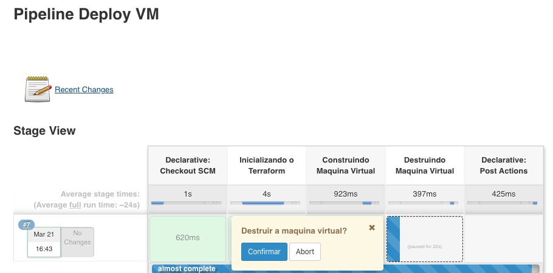">
Uma perfumaria que pode ser feita é o alerta no slack :D
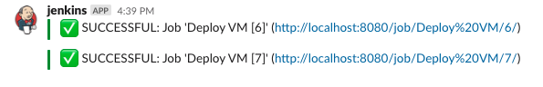">
Demo

Conclusão
A alguns anos atrás acredito que para a maioria dos Sysadmin’s(Ops), SRE’s, DevOps Engineer, não importa o nome do cargo, criar um fluxo (pipeline) de entrega de infraestrutura seria inimaginavel. Esse foi uma pequena desmonstração do que pode ser feito, uma forte recomendação é ler a documentação do módulo vSphere do terraform e conhecer outras configurações que podem ser aplicadas na sua infraestrutura.
Projeto: https://github.com/fabianoflorentino/terraform-deploy-vm